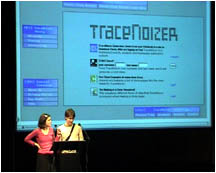

- users -
|
. A number of 2-day Short Courses will be arranged on 12 - 13 June immediately after the conference. The User Conference is the place where users from all over the world meet, exchange experience, discuss software development directions, participate in workshops with the software developers and obtain valuable advice for new software applications from expert modellers. .. |
|
It quickly takes a snapshot of the user's screen and uploads it to the DeskSwap server. Yet since screensavers only become active during periods of inactivity, DeskSwap catches candid images of the user's desktop. Mode one is a direct "peer to peer" connection where two users exchange desktops only with each other. In this mode the two users are aware that they are simultaneously exchanging images with each other. The second mode is a "round robin" connection where several users will exchange their images as a group, cycling through desktops one after another. |
0b of Eviction Forms Creator will become available around the end of April, 2002. These new versions of the programs use FileMaker 5. They also incorporate a number of suggestions users have made for improving the programs. 0a will be sent automatically free of charge to everyone who purchased version 2. 0b will be sent automatically free of charge to everyone who purchased the program since the beginning of December, 2001.
|
|  |
10 software is a major enhancement version compatible with the Windows NT and Windows 2000 platform. OCLC is pleased to offer the 2-day CJK software user training program in various setup options. OCLC is willing to further modify the following four schemes to best meet local users' needs. The 2-day program may include the user training with the independent software product, OCLC Multiscripts Z39. 50 Client that allows users to search and display MARC records in the institution's Z39. |
A good users site: http://www.cogs.susx.ac.uk/users/inmanh/